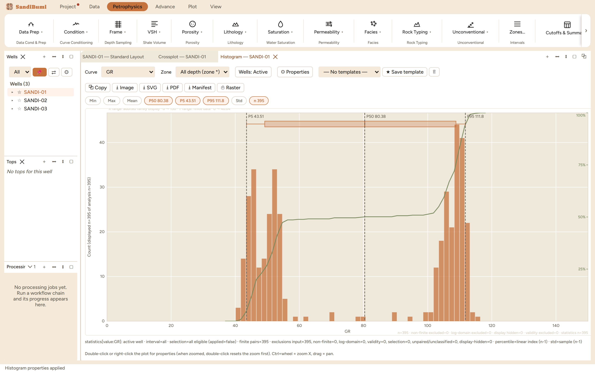

The histogram answers "what values does this curve actually take, and how many of them": the first look at any curve after import, the tool that picks normalisation endpoints and clay/sand reference points, and the honest way to compare a curve across wells before trusting a crossplot of it. On the example GR it shows the section's story in one frame, a clean-sand mode and a shale mode with almost nothing between.
The toolbar picks the curve, the zone (a top selected in the Tops pane auto-inserts an @top interval), and the well scope: the Wells: pill cycles Active / Pinned / Selection / All / Custom, so the same panel reads one well or the whole field. Under it sit the statistic chips; press one and it stays lit with its value in the chip, so the numbers you are working from are always on screen.

Every count on the panel is accounted for. The audit line under the plot reconciles the input population to the displayed one, and the statistics custody block states exactly what the numbers were computed from, in the panel's own words:
statistics[value:GR]: active well · interval=all · selection=all eligible (applied=false) · finite pairs=395 · exclusions input=395, non-finite=0, log-domain=0, validity=0, selection=0, unpaired/unclassified=0, display-hidden=0 · percentile=linear index (n-1) · std=sample (n-1)
Two conventions matter when comparing against other software: percentiles use the linear-index rule (the NumPy/Excel default), and the standard deviation is the sample form (n−1). Out-of-range values are dropped from the bins, never piled into the edge bar, so a spike at the axis limit is real data, not an artefact.